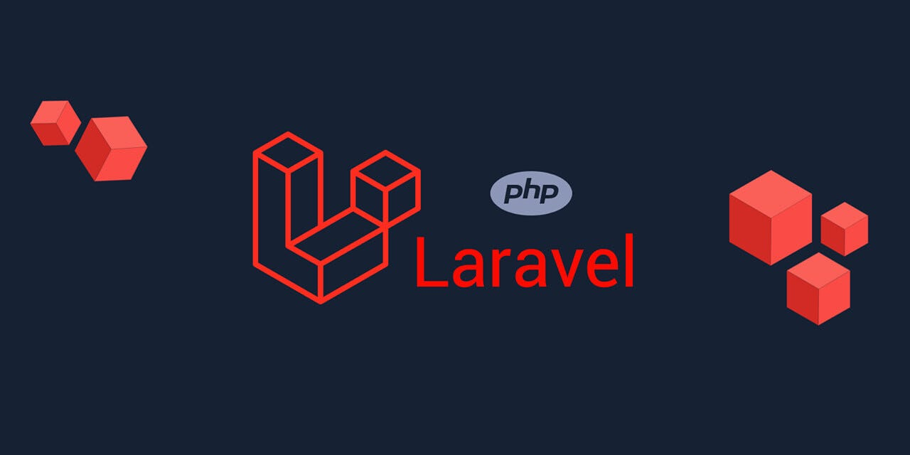

Semana 13: Backend con PHP y Laravel
Temas aprendidos:
- Instalación de Laravel mediante Composer.
- Uso de Artisan para generar controladores, modelos y migraciones.
- ORM con Eloquent para manipulación de bases de datos.
- Rutas web y API, validación y controladores de recursos.
Ejercicios / Resultados:
- CRUD completo de productos con validaciones de entrada.
- Pruebas de endpoints con Postman.
- Uso de plantillas Blade para vistas personalizadas.
Reflexión personal:
Laravel me pareció una herramienta muy poderosa para el desarrollo web con PHP. Su estructura facilita mucho el desarrollo ordenado y profesional, y el uso de Artisan agiliza bastante el trabajo del programador.
